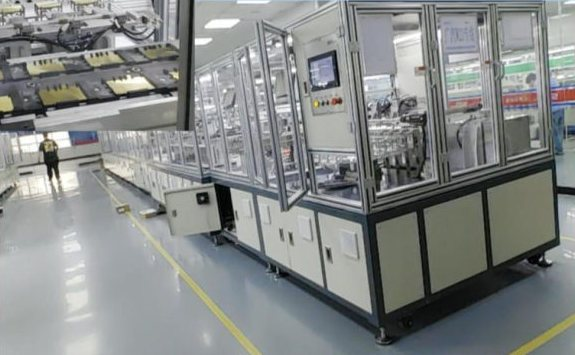
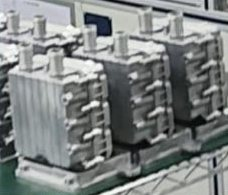
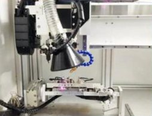
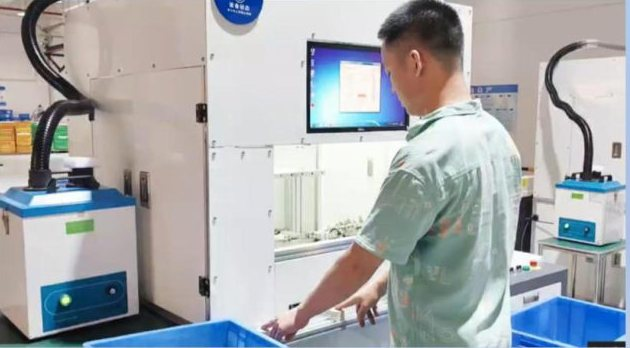
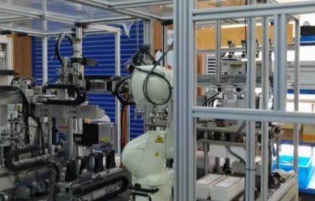

项目案例
部分项目示例。客户名称不公开，详情可应询提供。



新能源汽车零部件
新能源汽车电池 PTC 水发热包：两段式组装检测线
- A 段将 PTC 元件与电极片压合成发热芯。
- B 段包括壳体密封、高低压座安装、IGBT 与 PCBA 安装、焊接、点胶与 AOI 检测、盖板密封、贴标，以及耐压与电阻测试。
- 各工位扫码，每件产品都有生产记录。
- 中段典型方案：约 25 米 × 6 米，由模组搬运机械手串联，含固化隧道炉、带扭矩与角度监控的自动锁螺丝、AOI 检测与自动贴标。
新能源与汽车
汽车暖风 PTC 发热芯：自动生产线（客户现场调试）
- 自动生产车用暖风波纹条发热芯。
- 配套的发热组件组装线由我们的工程师在客户现场完成调试。
- 两条线都在工位间追踪产品。



锁具与五金
智能锁锁体：激光焊接、组装与旋铆生产线
- 激光焊接工位完成锁体零件焊接，各工位配烟尘净化。
- 组装与旋铆工位由输送线串成整线。
- 操作工在工位上料，焊接与旋铆由设备完成。



个护电器
电动牙刷：组装检测生产线
- 马达压轴、组装与功能测试在一条线上完成。
- 机器人工作站承担重复的转运与组装工序。
- 可配套刷头吸塑焊接包装设备。
化妆品包材
化妆品包材：口红推出组件组立与瓶盖烫金
- 振动盘供料，自动组立口红推出组件。
- 圆形泵盖与异形睫毛膏盖自动烫金。
- 配套移印机与转盘丝印机用于装饰印刷。


视觉检测
CCD 视觉检测的多场景应用
- 烫金瑕疵检测：褶皱、裂痕、发亮、发白。
- 视觉定位激光打标、组装与锁螺丝。
- 点胶漏胶、少胶、缺口检测；按颜色与形状分选。

服装
服装生产线设备（越南）
- 为越南一家服装工厂设计并在广州完成预测试的生产线设备。
- 已发运并在客户工厂完成安装调试。
- 项目详情经客户同意后可应询提供。